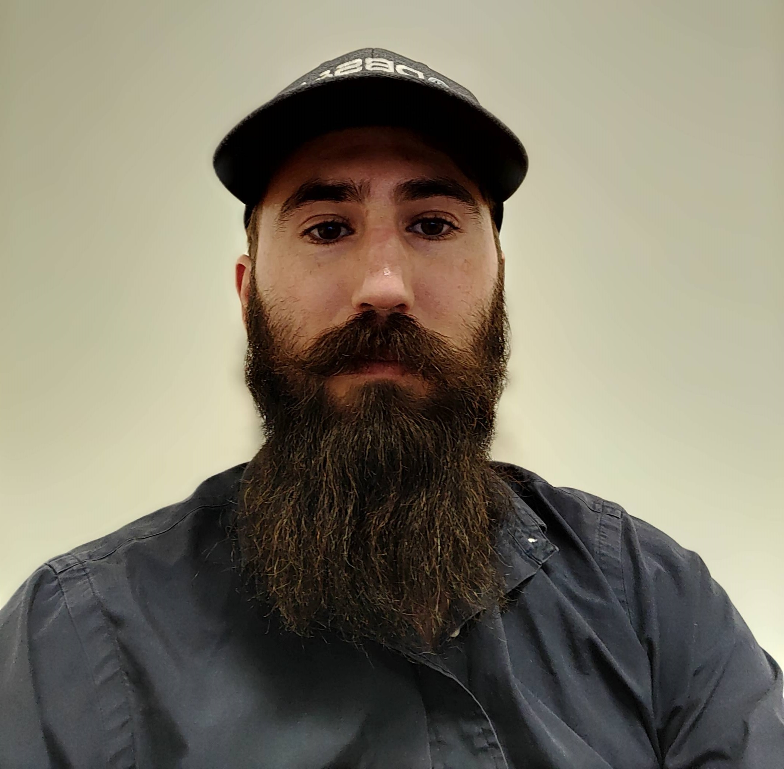

David Noubar Manoukian
Web Developer and Registered Professional Geologist #15105
Personal Information
Address:
1516 Fern Ridge Lane, Pflugerville, Texas 78660
Mobile:
(562)338-3928
Email:
davidmanoukiancfi@gmail.com
Skills
Project Management
Database Management
Technical Reporting
Teamwork
Problem Solving
Languages
HTML
CSS
JavaScript
SQL

Bright, hardworking, professional and dependable aspiring Web Developer seeking employment
in the Austin, Texas area.
Experience
Geologist
Daniel B. Stephens & Associates July, 2019 to Present
- Oversee and manage drilling operations on monitoring and domestic supply wells.
- Draft proposals and technical reports.
- Review laboratory analytical reports, and manage analytical result databases.
- Ensure Health and Safety Plan compliance.
Consultant III
Ramboll May, 2014 to July, 2019
- Oversee and manage drilling operations on monitoring wells.
- Oversee and manage asbestos and lead-based paint surveys.
- Develop and perform sampling plans on Phase II site investigations.
Project Summary
Yuma Proving Grounds
Project Manager (2014 - 2016)
- $2,000,000 Budget
- Contracted by United States Army Corps of Engineers (USACE) to perform asbestos, lead-based paint, mercury, and polychlorinated biphenyl inspections on 175 US Army buildings
- I scheduled and managed fieldwork, drafted over 100 inspection reports, lead bi-weekly conference calls, lead onsite meetings with client and US Army, managed a GIS based building status database, and prepared monthly progress reports.
Lake Isabella
Project Manager (2015)
- $150,000 Budget
- Contracted by USACE to perform asbestos and lead-based paint inspections on 13 US Forest Service buildings, perform detailed investigations two suspected burn areas and an undocumented underground storage tank.
- I prepared the Quality Assurance Project Plan required for USACE projects, performed asbestos and lead-based paint surveys, evaulated the suspected burn areas via unbiased incremental sampling procedures, and drafted reports, figures and tables documenting results.
Porterville Army Airfield
Contract Acquisition (2015)
- $250,000 Budget
- I conducted site visit, drafted cost estimate, and won contract.
- I drafted the Work Plan, Quality Assurance Project Plan, Quality Assurance Surveillance Plan, Sampling and Analysis Plan, Project Management Plan, and Project Schedule.
Hopi Tribe - CARES Act and Hopi Arsenic Mitigation Program
Technical Team Member (2020 - 2022)
- Contracted by the Hopi Tribe under the federally funded CARES Act to install four (4) domestic water supply wells and to construct a 40-mile long water distribution network to supply the Hopi Tribe with their first potable water source.
- Wells were completed within the Navajo Sandstone at depths ranging from 650 to 2,500 feet below ground surface.
- I provided oversight of drilling operations, interpreted lithological cuttings and drafted boring logs, identified regional aquifers, and provided oversight for construction of the water distribution network.
Lone Grove
Technical Team Member (2022)
- Contracted by the city of Lone Grove, OK to install two test wells in order to determine potential locations for domestic water supply wells. Additional water sources were needed by the city to lift a moratorium on expansion.
- I provided oversight of drilling operations, interpreted lithological cuttings and drafted boring logs, identified suitable water bearing zones, determined screen intervals and performed aquifer testing.
Stephenville
Technical Team Member (2023)
- Contracted by a consultant to install five (5) domestic supply wells to provide the city of Stephenville, TX with additional sources of drinking water.
- I provided oversight for drilling operations, directed drillers on well construction details, interpreted lithological cuttings and drafted boring logs, identified suitable water bearing zones based on lithology and geophysical data.
NADBank Water Audit
Technical Team Member (2019)
- Contracted by the city of Lyford, TX to perform an audit of the city's water supply system as a prerequisite for funding for the expansion of their water system.
- I performed meter testing of the meters of 20 of the city's top consumers, documented all fieldwork, testing results, limitations in testing results, and provided meter installation recommendations in a report.
Undisclosed Project Title
Technical Team Member (2017 - 2018)
- As part of then current litigation, our client was unable to document whether lead safe work practices were followed in renovations of approximately 10,000 pre-1978 residential properties.
- I conducted wipe sampling for lead, performed exterior inspection, identified areas in need of decontamination, and managed decontamination efforts.